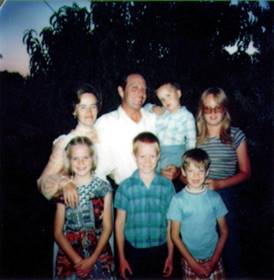Chapter 29 – 1976, UPDATE ON CHILDREN
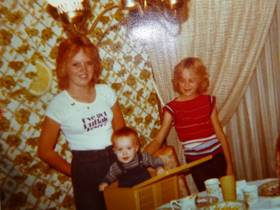 Sandi and Shellie were good friends growing up. Sandi was a good big sister to Shellie, Mike & David. She would make things for them to play with, she would play school with them, Barbies with them - Mike & David thought this was great fun at times also. They thought Sandi was great.
The main problems Sandi & Shellie had was when Sandi got to be a teenager and wanted to be with her friends more. Shellie would tease Sandi - wanting attention, and Sandi would get out of patience and they would start fighting. Shellie was very stubborn and wouldn't give up even though she was getting the worse of it since her big sister was 5 ½ years older than her. I would come in and break it up, but before I got out the door, Shellie would be back to fighting as she wouldn't give up.
When Sandi got married at the age of 17, Shellie was devastated. She only had one sister and now that sister was leaving her. She disliked Dave for taking her sister away from her. I didn't realize how hard it was on Shellie until years later. Sandi didn't either.
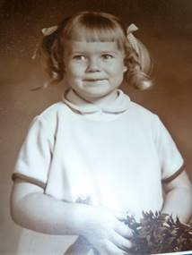 Shellie was content as a child. If she had cousins, friends or her brothers or sister to play with, it was fine and she had a good time, but she was also happy playing by herself. When she was between the ages of 2 and 4 years old, we lived in Clearfield. The stairs going down into the basement were by the back door of the kitchen. Shellie would play on the stairs with her toys for hours while I worked in the kitchen cleaning or preparing meals. She was that way as she continued through youth and adolescence. She loved to put puzzles together and read. She read about every Jack Wayland, Blain & Brenton Yorgenson & Gerald Lund book there was. (They are "good" books). If I needed Shellie and couldn't find her, I would go to her room and she was usually there reading or putting puzzles together. She also loved to listen to good music or play the piano.
I've talked about Shellie being stubborn - or strong willed. Ken & I were concerned that we might have problems with her when she became a teenager - but we didn't have to worry. She had gained a testimony of the gospel and was very strong in choosing right from wrong. She has said many times since, that she always felt like she had to pull her friends along and keep urging them to do the things they should be doing. I remember when she was in High School in Grantsville that some boys would go behind the girls and pinch them. It only happened once to Shellie. Mike told us that Shellie whirled around and smacked the kid so hard that he fell against the lockers and hit his head. He, nor any other boy, ever tried pinching her again.
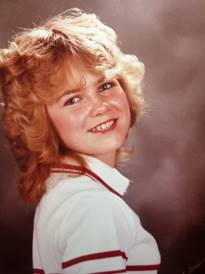 A boy, who had a crush on her, wanted to take her to a school dance, but she wouldn't turn 16 for a couple of weeks. Shellie & I were in the car and he came over and asked me if Shellie could go with him to this dance. I told him that Shellie wasn't 16 yet. Some girls would have been upset that their Mom wouldn't let them go when their birthday was that close, but not Shellie. She told me that she would have been upset with me if I had told him she could, even though she liked the boy and would have liked to have gone had she been 16. I was very proud of her then and I always have been.
Another boy wanted to date her, but she wouldn't consider going out with him because he would go on "beer parties", etc. He told her one day that she didn't have any fun - that she wouldn't go to parties and drink or smoke, that she wouldn't "make out" with guys and that she wouldn't even watch "R" rated movies. She said "I have more fun than you do and I don't have to wake up with a hangover the next morning."
Shellie became a flag twirler for the band and Mike and David were in the band also. Mike and David both played the trumpet, but later the band teacher asked Mike if he would play the sousaphone. They had a great band teacher. I was talking with him one day and he told me that as youth are involved in both music and sports, it helps them academy. They get better grades, that is if they take time to study also.
Shellie also tried out and became a cheer leader. I loved to go to the Grantsville games and watch her cheer. She was very good at it. When she had talked to me about wanting to try out to become a cheer leader, I told her that many girls, when they became cheer leaders, the popularity went to their heads and they thought they were better than the other girls and didn’t treat them good. I told her that if she did become a cheer leader, I would support her, but I didn’t want that to happen to her. I told her she was a wonderful, beautiful girl, but that Heavenly Father loves all his children, and she is to treat them that way. She promised she would, and she did. I was proud of her.
It has been fun going to the children's games, activities, plays, recitals, etc. throughout the years. Even though it took a lot of my time to go to these events, I loved every minute of it. I feel sorry for parents who don't support their children in the things they do, they hurt their children, but they hurt themselves as well - by missing out on all the joy and happiness it brings and the closeness to their children.
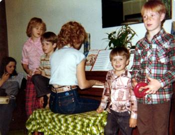 Sandi took tap dancing lessons for four years (ages 4-8) when we lived in Ogden. Our neighbor, Pat Wiggins, was the teacher. We started Sandi on the piano soon after, and found she really had a talent for music. She took longer than the other children because she enjoyed it and practiced without being told to. We put her with an advanced teacher when we lived in Sunset and she did really well. From the time she was 12 years old, she has been a Pianist or organist for most organizations. Sunday School, MIA, Primary and for Sacrament Meeting. When we lived in Erda, Connie King was over the Tooele County Beauty Pageant and had Sandi play for it. After she was married, Dave's grandmother was the organist and had Sandi substitute for her several times. She was also the pianist for Relief Society in her ward. I always enjoyed hearing Sandi practice the piano. She also played for us, as a family, while we sang at Family Home Evenings, Family Christmas parties, etc.
With her talent of art, she painted scenery for road shows in MIA, made posters, etc., for other organizations. Both her and I felt they took advantage of her good nature many times - because people would ask her at the last minute to do art projects for them, and hardly say "thank you" afterwards. I was proud of her for willingly giving of her time and talents.
Sandi has many talents. She won dance contests in school. After her girls started taking dance lessons, their instructor asked Sandi to help her teach. She did, and eventually took over the dance school. She further developed her talent in dancing by making up dance steps & routines to teach her students, designing and sewing dance costumes, putting on dance recitals and accepting invitations for her and her classes to dance at church, community & other functions. She was very successful as a dance teacher and later on, JaNae, her oldest daughter, taught also.
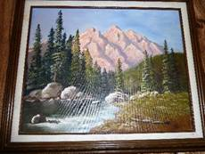 Dave encouraged her to take oil painting lessons, which she did. She paints beautiful scenery and animal pictures. She has won awards at fairs. She has given each of her brothers & sister a beautiful oil painting for their weddings. She has given Ken & I several and we love them. She has painted on canvas, saw blades, cupboard doors, etc. Friends and others have asked her to paint pictures for them or to give as gifts, so she has sold several paintings. I loved to go to her home in Grantsville during the different holidays because she usually had painted a cartoon holiday scene on her front window. A restaurant owner in Grantsville asked her to paint a "50's" mural on his walls and he would pay her. She did and it was really cute. She painted a girl with pony tail, full felt skirt complete with "poodle", bobby socks & penny loafer shoes sitting at a counter sipping a drink through straws which her and her boy friend shared. She painted a jute box, etc. She has painted a beautiful landscape picture for Ken & I. (This is the picture). She also painted pictures for her grandparents, and her brother’s & sister as they get married.
She also did a beautiful cross-stitch of a deer jumping over a log. She made it for her dad for Father's Day. She had told Dave she would make him one also, but it took so long - that this one was all she made.
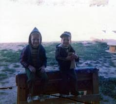
Mike and David were different personalities, but, for the most part, they were "best friends". Mike took more after the Browning’s and was stockier like his dad & grandpa Browning. David was thinner and took after the Porters. Mike is red headed and David, Brunette. Mike was soft hearted and just a cross word from us, when he was little, would bring him to tears. But, not David, even when David was being spanked, he wouldn't cry, even though it hurt. David was more stubborn and more daring than Mike, and so it was interesting to watch them together. Since David would dive off the high diving board when very young, Mike didn't want to be outdone by his little brother - so he would do it also even though he probably would rather not have done it. David would climb the highest trees, walk fences, go cave exploring and hiking, etc., and Mike would follow.
Mike was more cunning than David, however, as he would think of things to do that were sometimes dangerous - like making a bomb at the farm in Grantsville and then telling David to light it. Mike would run and hide. David did light the makeshift bomb and was blown against the shed with his eye brows and eye lashes burned. It was a wonder that he wasn't hurt more seriously. The shed was shaking and Mike saw us coming up the road - so he said to David "Here comes Dad & Mom, help me hold the shed and try to stop it from shaking".
In Grantsville, they made a tote goat together from a lawn mower motor Mike & David bought from Mike's friend, Larry. They had a ball with this tote goat. I even had a few rides on it. They built a tree house together down the lane from our home in Grantsville. They built a "hut" on the farm. I can't remember if it was a one story or two story. It seems like it was a two story.
Mike & David had their share of fighting - like all brothers do. When they would wrestle, it was fun to watch because first Mike would be on top, as he was the biggest, but then David would be on top because he was the fastest and because he was stubborn, he wouldn't give up, so it was usually a tie - both getting so tired that they would both give up. However, sometimes, it turned out to be a fight and they would both be so angry that Ken or I would have to break them up. I didn’t like to see that happen.
I remember soon after we moved to Grantsville, taking Mike & David to school and telling them we would pick them up after school. When we drove up, we saw a bigger, older boy beating on Mike. I was upset and ready to open the car door and run over to help Mike, but Ken saw David coming out the school door and seeing what was going on with his brother. Ken stopped me and said "watch David". I did and David's eyes got wild like a tiger’s and he ran as fast as he could over to the boy and jumped on his back, kicking and clawing at him like a wildcat. The older boy didn't know what had happened to him, but as soon as he could get David off his back, he ran for home. It was neat to watch that. Maybe David could fight with Mike, but no one else better as he would defend his brother - like no one I've seen before would, and Mike would do the same for David.
Mike had a temper and would sometimes have temper tantrums. When we lived in Arizona the first time and lived in our first home, he was about 3 or 4. When he would start yelling and screaming, I would put him in his room and tell him he needed to stay there until he could calm down. He would scream even louder and kick the door. I was afraid the neighbors would think I was beating him. I remember one time I was telling him that Heavenly Father would be disappointed in the way he was acting and that he was making Satan happy. He yelled “I don’t care, I want to make Satan happy.” When we moved over into our newer home a couple of blocks away, I was in the primary presidency and we were having our presidency meeting at my home. Mike had gotten himself in trouble and I had him sitting on a chair when they came. After a while one of the ladies said “How come your son is sitting so long and so quietly on that chair, is he being disciplined? I said “yes”. She said “How do you get him to sit there without trying to get off, my children won’t do that.” I said “He knows if he gets off, he will be in more trouble so he knows he can’t get off until I say he can.” Soon, I went over to Mike and talked to him and we hugged and he got off and went off to play. That was one of the main ways I disciplined the children when they were young. When Mike & David were about 9 & 10, they were fighting so I had one sitting on the couch and the other in the big stuffed chair. I went in the kitchen to fix supper and I heard them laughing. I went in to see what they were doing, and they were both mostly off their seats and were trying to touch each other with their feet and still have part of their bodies on the seats. I scolded them and made them sit up again. Wow! They were a challenge sometimes.
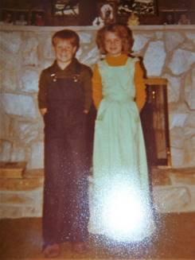 I also counted to 5 when the children didn’t quickly obey. They knew they better be moving by the time I reached 5. They jokingly tell me now that as I got close to 5 and they were not moving, that I would say 3 ½, 4, 4 ½ , etc. I DON’T THINK SO! Another thing I tried was pinching them on the shoulder blades. I had read in a book (I read a lot of parenting books) that if children don’t obey when you ask them once, don’t ask or tell them again, just go to them and pinch in a certain spot (which they showed) and it brings pain, but no damage to them. They didn’t like that and I don’t think I used it very often. I also tried many positive methods – they could put marbles in their jar when they did something good for someone else or obeyed quickly, etc. We had different reward systems. What works for one child doesn’t always work for another, so it was a challenge, but they were basically good kids and I loved them and usually always enjoyed being with them. Some mothers would be so happy when the summer was over and the children had to go back to school, but I was sad as I enjoyed having my children at home with me.
Mike and Shellie didn’t get along. They would argue and sometimes end up fighting. Sometimes Shellie would hear Mike & David teasing Scott and would come out to defend Scott and she says they all would turn on her, including Scott. One time Ken came in and the boys were hitting and punching Shellie. Ken was really angry because boys are not to hit girls, even if it’s their sister, so he took the boys out to the shed and gave them a licking. Mike cried out, but David was not going to let his dad know it hurt it, so he wouldn’t yell or cry out. I wasn’t there, but that’s the story I got.
Mike and Shellie still don’t agree on everything and they don’t enjoy each other, like I wish they did. They have raised some of their children, and still have some at home. I guess they tolerate each other when they are together and they can still talk and have fun, but I guess it’s good that they don’t live close together. I think the feeling is mutual between the two of them. They are both wonderful children, so I wish they could get over it and look for the good in each other and love each other as they should. Maybe some day.
When Mike would get upset with Ken or I, he would say “I’m going to run away”. When he was a little guy and we lived in Arizona, we didn’t have a fence and there was a big field behind our back yard. About halfway in that field, they had a big tall sign. When Mike wanted to run away, I would say to him: “You can run as far as that sign, but you can’t go any further.” You can stay as long as you want and then come back home. He would run as fast as his little legs could carry him down to that sign. He would stand by that sign for a few minutes to cool off and then come trudging back home. He had learned to obey, so I was able to trust him as there was a busy road on both the south and especially the west sides of that field. I would have been worried if he wouldn’t have stayed there. If he had disobeyed, I wouldn’t have let him go there.
When we lived in Grantsville, he again would get mad as he felt we always blamed him when there were problems or him and the other children were fighting. He is such a good kid, but he was a tease and he usually did start it. He would want to run away again. I told him he could go as far as the corrals, which were at the north end of our property, so probably a third or half mile away. I was thankful he was obedient then also. When we lived in Firth, Idaho, I only remember him running away once. He was 16 & 17 when we lived there. I realized he had gotten mad and had taken off through the back of our property. I was worried about him as I didn’t know where he would go so I took off after him. I met up with him and we talked and worked it out as we walked back home.
Mike has always loved “toys” and sometimes he would talk David into going in with him to buy something “neat”. It’s fun to see the two different personalities, and yet to see how close they have been throughout the years. I guess that’s true of mine and Ken’s moms. They are so different in every way except for their love for their children and the Lord. And, yet, Ken and I are really compatible.
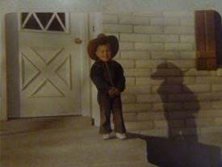We have enjoyed our little Scott. He was such a cute little guy and very good natured. He was his father’s shadow in Erda. The other kids were in school and Scott loved to be with his dad so Ken would take him about everywhere that he could. He would take him with him to Salt Lake when they went for parts and they would stop for ice cream on the way back. One time when they went to the John Deer place for parts for Ken’s tractor, they had a small tractor that children could ride. Scott got on in and loved it. Ken wished he could afford to buy it for him – but he couldn’t. The man looked at Scott and said “I bet your dad calls you Scotty Skaboo.” Scott was so surprised and asked Ken when they got in the truck to go home “How did he know that you call me that?” Ken also took Scott with him when he used the tractor to disk, plow, bail hay, etc., as it was a beautiful closed in cab with air conditioning, etc. Scott would ask his dad to tell him stories and he would tell him the stories of “Goldilocks and the Three Bears”, “Three Little Pigs”, “Red Riding Hood”, etc. Ken would, on purpose, tell them differently some times, and Scott would say “Dad, it doesn’t go like that” and Ken would laugh and ask him how it went. Scott would follow Ken as he went to feed the animals, etc.
SCOTT’S HEALTH PROBLEMS
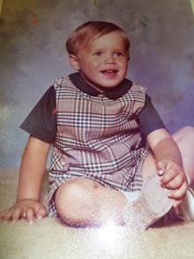 In October of 1975, Scott got the Rubella measles. From that time on, he has been sick with one thing or another. He got the red measles and mumps, ear infection, tonsillitis and every flu or virus that came along. Finally, in May, we took him to an eye, nose and throat specialist. We had taken him to a children’s doctor, but they just kept giving me prescriptions for him. We knew his tonsils were infected because when we’d look into his throat, they were so swollen and his breathing was irregular. When I took him into the specialist, he said both his tonsils and adenoids needed to come out. They also took a test on his ears and found fluid in both ears and a 20 to 30 percent hearing lost in the right ear and some in the other, so tubes would also be needed. That was the reason he had never slept through the night. All our other children, when they got a few months old, began to sleep through the night, but Scott never did. He would wake up crying. Neither he nor I had gotten a good night’s sleep since he was born. Ken also was up with him many times. With the fluid in his ears, when he would lie down and go to sleep, the pressure would build up and hurt his ears and he would wake up. He woke up several times most nights. He was operated on the 28th of May in the Primary Children’s Hospital. They found a growth on his throat behind his tonsils that was 1½ inches long and as big around as a man’s thumb. Dr. Zobell had him put in intensive care because of precautionary measures - swelling might occur and infection could set in easily. That was quite an ordeal for Scott. (Also, me) They tied him down (his hands and feet to the bed) because they had an IV in his arm to feed him through the veins. They also had the heart machine on him and he was in a mist tent. He was terrified, but they gave him shots to keep him asleep most of the time. One thing which really helped him was that he had become attached to a “kittie pillow”. Sandy and Shellie had become attached to a blanket, but I had made Scott a pillow. The material was a cat. He loved this pillow and slept with it and carried it around some times. He always wanted to take it with him when we went somewhere. It was like a security blanket for him. I made him a new one before he went to the hospital because the other one was about gone. They did let us have that pillow in his bed with him in intensive care. I guess because it was new. I’m sure they wouldn’t have let him have the old worn out one. I was thankful for that, but it was so hard not to be able to hold him and rock him. I stayed with him during the two days and Ken stayed with him during the nights. We brought him home and he recovered quickly.
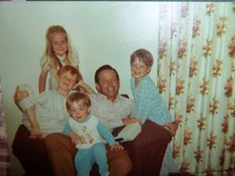I had “Their day” for each of the children where I would spend at least an hour or more with them on a one-on-one doing what they wanted to do. With my sons, sometimes I would play marbles, or go insect exploring, bike riding, going to get an ice cream, etc. With the girls, I would play barbies, go bike riding, go for ice cream, etc. I enjoyed these times as much as the children did. It was relaxing and I could enjoy that child and we could visit and have fun together. I wanted them to know how much I loved them and that they were special. I would work it out so the others were playing together or one of them tending the younger ones while I was with another. I got this idea from a lady in the Mt Fort Ward during Relief Society. She was doing it with her children and they loved it, so I wanted to incorporate it into our children’s lives. (I don’t know why Sandi was not in this picture. She must have been with her friends or to an activity.)